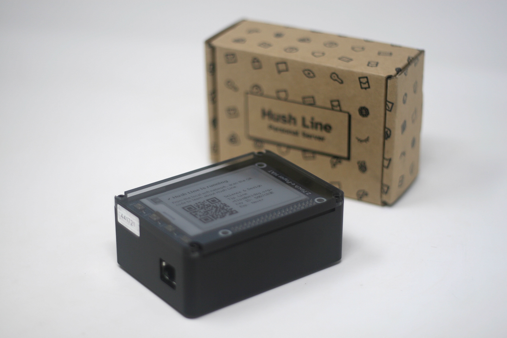

Hush Line Personal Server
The Personal Server is a physical device running a Tor-only version of Hush Line. This is our customer-facing product that doesn't require a user to use the terminal or SSH to configure their tip line. It uses an e-paper display and web form to guide the user through the setup process, and in a matter of minutes, you can have an anonymous tip line deployed and ready to use.
1. Plug in ethernet
Before beginning, first plug in the ethernet. The Personal Server doesn't use wifi to help ensure high stability and availability.
The setup process will begin once an internet connection is detected.
2. Power up the device
Your server optimizes the setup time by coming with all of the necessary software preloaded on the device. When you power up the server, we update your software and Hush Line repository.
3. Wait ~5 mins for a setup code to display.
After the updates, your device's screen will display a QR code that links to a locally hosted web form.
4. Scan the code
Scan the code or visit https://hushline.local/setup from a device on the same network as your Hush Line Personal Server.
5. Add SMTP & PGP information
The form will ask for five pieces of information that we set up in the prerequisites.
👉 Make sure your public PGP key is unmodified, beginning with -----BEGIN PGP PUBLIC KEY BLOCK----- and ending with -----END PGP PUBLIC KEY BLOCK-----.
The information you'll need:
- SMTP email address
- SMTP address:
smtp.gmail.com - App password (from prerequisites)
- Port: 465
- Public PGP key (from prerequisites)
6. Email confirmation
You'll receive an encrypted email confirming your Hush Line Personal Server's successful installation. The email will include your address and a link to download Tor Browser.
7. Using Hush Line
Your screen will reset and display a QR code linking to a local information page intended for use by individuals interested in using your tip line. You can print this page, copy the content, email it, and post your Hush Line address on your social channels and website.
🎉 Congratulations! You've successfully set up your own anonymous tip line!